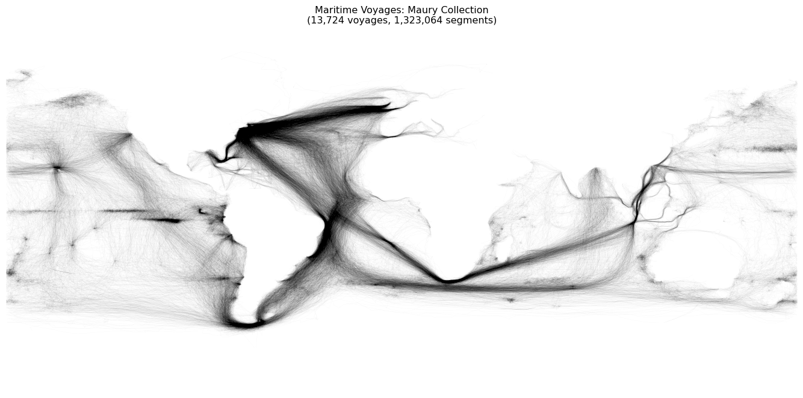
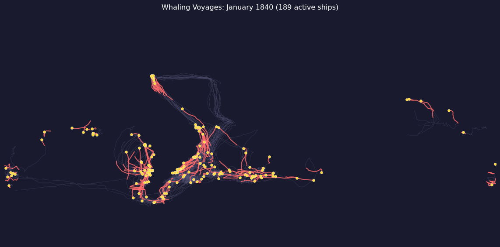

Step 5: Visualizing Voyages and Creating Animations
Visualizing Voyages and Creating Animations
Now that we have classified voyages, we can create the iconic “ghost ship” visualizations that Ben Schmidt pioneered. This notebook covers:
Static “ghost ship” maps with semi-transparent tracks
Performance optimization for rendering thousands of voyages
Animated visualizations showing ships moving over time
Video export for pausable/scrubbable playback
The Ghost Ship Aesthetic
The “ghost ship” visualization is deceptively simple: we draw thousands of voyage tracks with very low opacity (alpha ≈ 0.02-0.05). Where many ships traveled the same route, the overlapping lines accumulate and create darker regions. The result reveals maritime highways that would be invisible if we plotted voyages one at a time.
This technique transforms a dataset that’s too large to comprehend into a single image that communicates the overall pattern immediately. The name “ghost ships” comes from the ethereal, semi-transparent quality of the overlapping tracks.
import numpy as npimport pandas as pdimport matplotlib.pyplot as pltfrom pathlib import Path# Load classified datadata_path = Path("../data/observations_classified.parquet")if data_path.exists(): df = pd.read_parquet(data_path)print(f"Loaded {len(df):,} observations from {df['voyage_id'].nunique():,} voyages")print(f"Classifications: {df['classification'].value_counts().to_dict()}")else:print("Note: Run classify_voyages.py first to generate classified data") df =None
Plotting 13,000+ voyages individually is extremely slow. The naive approach looks something like this:
# SLOW: O(n²) - don't do this!for voyage_id in df['voyage_id'].unique(): voyage = df[df['voyage_id'] == voyage_id] # Full scan for each voyage! ax.plot(voyage['LON'], voyage['LAT'], alpha=0.02)
This code has two serious performance problems. First, O(n²) filtering: each df[df['voyage_id'] == vid] scans the entire DataFrame, and we do this for every voyage. Second, individual plot calls: each ax.plot() has overhead from setting up line properties and updating the figure; with thousands of voyages, this overhead dominates.
Let’s look at two solutions that make this fast enough to be practical.
Solution 1: Use groupby() Instead of Repeated Filtering
The first optimization is to sort the data once, then use groupby() to iterate through voyages. This avoids the repeated full-DataFrame scans:
Solution 2: Use LineCollection for Batch Rendering
The second optimization addresses the rendering overhead. Instead of calling ax.plot() thousands of times, we collect all line segments into a list and render them in a single call using matplotlib’s LineCollection. This batches all the rendering work:
from matplotlib.collections import LineCollectiondef create_line_segments(voyage_df):""" Convert voyage DataFrame to line segments for LineCollection. Handles date line crossings by breaking tracks at longitude jumps > 180°. """ segments = [] lons = voyage_df['LON'].values lats = voyage_df['LAT'].values seg_start =0for j inrange(1, len(lons)):# Break at date line crossingsifabs(lons[j] - lons[j-1]) >180:if j > seg_start +1: points = np.column_stack([lons[seg_start:j], lats[seg_start:j]])for k inrange(len(points) -1): segments.append([points[k], points[k +1]]) seg_start = j# Final segmentiflen(lons) > seg_start +1: points = np.column_stack([lons[seg_start:], lats[seg_start:]])for k inrange(len(points) -1): segments.append([points[k], points[k +1]])return segments# Demonstrate with a single voyageif df isnotNone: sample_voyage = df[df['voyage_id'] == df['voyage_id'].iloc[0]].sort_values(['YR', 'MO', 'DY']) segs = create_line_segments(sample_voyage)print(f"Voyage with {len(sample_voyage)} points → {len(segs)} line segments")
Voyage with 56 points → 55 line segments
Creating a Ghost Ship Map
Now let’s put both optimizations together. The function below sorts once, iterates with groupby(), collects all segments, and renders them with a single LineCollection:
def create_ghost_ship_map(df, ax, color='black', alpha=0.03, linewidth=0.4):""" Plot all voyage tracks efficiently using LineCollection. Parameters: df: DataFrame with voyage_id, LON, LAT columns ax: matplotlib Axes color: Line color alpha: Transparency (lower = more ghostly) linewidth: Line width """# Sort once, then iterate with groupby df_sorted = df.sort_values(['voyage_id', 'YR', 'MO', 'DY']) all_segments = []for vid, voyage in df_sorted.groupby('voyage_id', sort=False):iflen(voyage) <2:continue all_segments.extend(create_line_segments(voyage))# Render all segments in one callif all_segments: lc = LineCollection(all_segments, colors=color, alpha=alpha, linewidths=linewidth, capstyle='round') ax.add_collection(lc)returnlen(all_segments)# Create the visualizationif df isnotNone: fig, ax = plt.subplots(figsize=(14, 7)) ax.set_facecolor('white') ax.set_xlim(-180, 180) ax.set_ylim(-90, 90) n_segments = create_ghost_ship_map(df, ax, alpha=0.02) ax.set_title(f'Maritime Voyages: Maury Collection\n({df["voyage_id"].nunique():,} voyages, {n_segments:,} segments)') ax.axis('off') plt.tight_layout() plt.show()

Comparing Whaling vs. Merchant Routes
With classified voyages, we can render whaling and merchant tracks separately to see how their spatial patterns differ. Whaling ships should concentrate in the Pacific and other whaling grounds, while merchant ships should follow Atlantic trade routes:
Static maps show accumulated patterns, but animations reveal the temporal dimension: ships moving across the ocean, routes shifting with seasons, whaling grounds being discovered and exploited over decades.
For animations, we need to show ships at each point in time. The key insight is to pre-compute voyage data once, then render frames efficiently. Without this pre-computation, we’d repeat expensive data processing for every frame.
def precompute_voyage_data(df):""" Pre-compute voyage segments with date information for animation. Returns dict mapping voyage_id to: - segments: list of {lons, lats, dates} dicts - min_date, max_date: voyage date range """ df = df.copy() df['_date'] = pd.to_datetime( df['YR'].astype(str) +'-'+ df['MO'].astype(str).str.zfill(2) +'-'+ df['DY'].astype(str).str.zfill(2), errors='coerce' ) df = df.dropna(subset=['_date']) df_sorted = df.sort_values(['voyage_id', '_date']) voyage_data = {}for vid, voyage in df_sorted.groupby('voyage_id', sort=False):iflen(voyage) <2:continue lons = voyage['LON'].values lats = voyage['LAT'].values dates = voyage['_date'].values# Break at date line crossings segments = [] seg_start =0for i inrange(1, len(lons)):ifabs(lons[i] - lons[i-1]) >180:if i > seg_start: segments.append({'lons': lons[seg_start:i],'lats': lats[seg_start:i],'dates': dates[seg_start:i] }) seg_start = iiflen(lons) > seg_start: segments.append({'lons': lons[seg_start:],'lats': lats[seg_start:],'dates': dates[seg_start:] })if segments: voyage_data[vid] = {'segments': segments,'min_date': dates.min(),'max_date': dates.max() }return voyage_data# Pre-compute for whaling voyagesif df isnotNone: df_whaling = df[df['classification'] =='whaling'] voyage_data = precompute_voyage_data(df_whaling)print(f"Pre-computed {len(voyage_data)} whaling voyages")
Pre-computed 824 whaling voyages
Animation Frame Rendering
Each animation frame shows three layers of information:
Trail: The full voyage path up to the current date, rendered with low opacity to show where ships have been.
Recent segment: The last 10 points of each active voyage, highlighted to show recent movement direction.
Ship position: A bright marker at each ship’s current location.
This layered approach gives the animation a sense of motion and history simultaneously:
def render_frame_example(voyage_data, current_date, ax):"""Render a single animation frame.""" current_np = np.datetime64(current_date) trail_segments = [] recent_segments = [] ship_positions = []for vid, data in voyage_data.items():if data['min_date'] > current_np:continuefor seg in data['segments']: mask = seg['dates'] <= current_npif mask.sum() >=2: seg_lons = seg['lons'][mask] seg_lats = seg['lats'][mask]# Collect trail segments points = np.column_stack([seg_lons, seg_lats])for k inrange(len(points) -1): trail_segments.append([points[k], points[k +1]])# Collect recent segmentsiflen(seg_lons) >3: recent_pts = np.column_stack([seg_lons[-10:], seg_lats[-10:]])for k inrange(len(recent_pts) -1): recent_segments.append([recent_pts[k], recent_pts[k +1]])# Find current positionfor seg inreversed(data['segments']): seg_mask = seg['dates'] <= current_npif seg_mask.sum() >0: ship_positions.append((seg['lons'][seg_mask][-1], seg['lats'][seg_mask][-1]))break# Batch render with LineCollectionif trail_segments: lc = LineCollection(trail_segments, colors='#555577', alpha=0.4, linewidths=0.6) ax.add_collection(lc)if recent_segments: lc = LineCollection(recent_segments, colors='#ff6b6b', alpha=0.8, linewidths=1.5) ax.add_collection(lc)if ship_positions: lons, lats =zip(*ship_positions) ax.scatter(lons, lats, c='#ffd93d', s=20, zorder=10, edgecolors='white', linewidth=0.3)returnlen(ship_positions)# Show a sample frameif df isnotNoneandlen(voyage_data) >0: fig, ax = plt.subplots(figsize=(12, 6)) ax.set_facecolor('#1a1a2e') ax.set_xlim(-180, 180) ax.set_ylim(-90, 90)# Pick a date in the middle of the data sample_date = pd.Timestamp('1840-01-01') n_ships = render_frame_example(voyage_data, sample_date, ax) ax.set_title(f'Whaling Voyages: January 1840 ({n_ships} active ships)', color='white', fontsize=12) ax.axis('off') fig.patch.set_facecolor('#1a1a2e') plt.tight_layout() plt.show()

Generating the Full Animation
The animation script handles the complete process of generating a multi-frame animation from the classified voyage data. Here’s what it does:
Pre-compute voyage data — Parse all voyages once and store in an efficient format
Generate date range — Create a sequence of dates from the data’s time span
Render each frame — Apply the layered rendering for each date
Save output — Write as GIF and/or MP4
Running the Animation Script
uv run python scripts/animate_voyages.py --classification whaling --n-frames 100 -o output/whaling_voyages
Options:
--classification whaling|merchant: Filter by ship type
--n-frames 100: Number of animation frames
--fps 10: Frames per second
--format gif|mp4|both: Output format(s)
--max-voyages 50: Limit voyages for quick preview
Video Output with ffmpeg
GIFs have a significant limitation: they can’t be paused or scrubbed. For longer animations, MP4 video is a better format. The script can use ffmpeg to convert rendered frames into a compressed video file:
import subprocessfrom pathlib import Pathimport tempfiledef save_as_mp4(frames, output_path, fps=10):"""Convert PIL frames to MP4 using ffmpeg."""with tempfile.TemporaryDirectory() as tmpdir:# Save frames as numbered PNGsfor i, frame inenumerate(frames): frame.save(Path(tmpdir) /f"frame_{i:04d}.png")# Use ffmpeg to create MP4# -vf scale ensures even dimensions (required for H.264) subprocess.run(['ffmpeg', '-y','-framerate', str(fps),'-i', str(Path(tmpdir) /'frame_%04d.png'),'-vf', 'scale=trunc(iw/2)*2:trunc(ih/2)*2','-c:v', 'libx264','-pix_fmt', 'yuv420p','-crf', '23',str(output_path) ])
Performance Summary
The optimizations we’ve discussed combine to make large-scale visualization practical:
Optimization
Impact
groupby() instead of filter loop
~10-50x faster data iteration
LineCollection instead of ax.plot()
~5-10x faster rendering
Pre-compute voyage segments
Amortized across all frames
Even dimensions for ffmpeg
Enables H.264 encoding
With these optimizations, rendering 100 frames of 800+ whaling voyages takes approximately 15 seconds—fast enough for iterative experimentation.
Gallery
Here are the key visualizations produced by the pipeline:
Ghost Ships: All Voyages
All maritime voyages
Whaling Grounds Density
Whaling grounds density heatmap
Traffic by Decade
Maritime traffic by decade
Animated Whaling Voyages
Source Code
---title: "Step 5: Visualizing Voyages and Creating Animations"jupyter: jupytext: text_representation: extension: .qmd format_name: quarto format_version: '1.0' kernelspec: display_name: Python 3 (ipykernel) language: python name: python3format: html: code-fold: false---# Visualizing Voyages and Creating AnimationsNow that we have classified voyages, we can create the iconic "ghost ship" visualizationsthat Ben Schmidt pioneered. This notebook covers:1. **Static "ghost ship" maps** with semi-transparent tracks2. **Performance optimization** for rendering thousands of voyages3. **Animated visualizations** showing ships moving over time4. **Video export** for pausable/scrubbable playback---## The Ghost Ship AestheticThe "ghost ship" visualization is deceptively simple: we draw thousands of voyage trackswith very low opacity (alpha ≈ 0.02-0.05). Where many ships traveled the same route,the overlapping lines accumulate and create darker regions. The result reveals maritimehighways that would be invisible if we plotted voyages one at a time.This technique transforms a dataset that's too large to comprehend into a single imagethat communicates the overall pattern immediately. The name "ghost ships" comes fromthe ethereal, semi-transparent quality of the overlapping tracks.```{python}import numpy as npimport pandas as pdimport matplotlib.pyplot as pltfrom pathlib import Path# Load classified datadata_path = Path("../data/observations_classified.parquet")if data_path.exists(): df = pd.read_parquet(data_path)print(f"Loaded {len(df):,} observations from {df['voyage_id'].nunique():,} voyages")print(f"Classifications: {df['classification'].value_counts().to_dict()}")else:print("Note: Run classify_voyages.py first to generate classified data") df =None```## Challenge: Rendering PerformancePlotting 13,000+ voyages individually is extremely slow. The naive approach lookssomething like this:```python# SLOW: O(n²) - don't do this!for voyage_id in df['voyage_id'].unique(): voyage = df[df['voyage_id'] == voyage_id] # Full scan for each voyage! ax.plot(voyage['LON'], voyage['LAT'], alpha=0.02)```This code has two serious performance problems. First, **O(n²) filtering**: each`df[df['voyage_id'] == vid]` scans the entire DataFrame, and we do this for everyvoyage. Second, **individual plot calls**: each `ax.plot()` has overhead fromsetting up line properties and updating the figure; with thousands of voyages,this overhead dominates.Let's look at two solutions that make this fast enough to be practical.## Solution 1: Use `groupby()` Instead of Repeated FilteringThe first optimization is to sort the data once, then use `groupby()` to iteratethrough voyages. This avoids the repeated full-DataFrame scans:```{python}def demonstrate_groupby_speedup():"""Show the performance difference between filtering and groupby."""if df isNone:returnimport time# Sample 100 voyages for timing comparison sample_ids = df['voyage_id'].unique()[:100] sample_df = df[df['voyage_id'].isin(sample_ids)]# Method 1: Repeated filtering (slow) start = time.time()for vid in sample_ids: voyage = sample_df[sample_df['voyage_id'] == vid] _ =len(voyage) filter_time = time.time() - start# Method 2: Sort + groupby (fast) start = time.time() sorted_df = sample_df.sort_values(['voyage_id', 'YR', 'MO', 'DY'])for vid, voyage in sorted_df.groupby('voyage_id', sort=False): _ =len(voyage) groupby_time = time.time() - startprint(f"Filtering 100 voyages: {filter_time:.3f}s")print(f"Groupby 100 voyages: {groupby_time:.3f}s")print(f"Speedup: {filter_time/groupby_time:.1f}x faster")demonstrate_groupby_speedup()```## Solution 2: Use `LineCollection` for Batch RenderingThe second optimization addresses the rendering overhead. Instead of calling `ax.plot()`thousands of times, we collect all line segments into a list and render them in asingle call using matplotlib's `LineCollection`. This batches all the rendering work:```{python}from matplotlib.collections import LineCollectiondef create_line_segments(voyage_df):""" Convert voyage DataFrame to line segments for LineCollection. Handles date line crossings by breaking tracks at longitude jumps > 180°. """ segments = [] lons = voyage_df['LON'].values lats = voyage_df['LAT'].values seg_start =0for j inrange(1, len(lons)):# Break at date line crossingsifabs(lons[j] - lons[j-1]) >180:if j > seg_start +1: points = np.column_stack([lons[seg_start:j], lats[seg_start:j]])for k inrange(len(points) -1): segments.append([points[k], points[k +1]]) seg_start = j# Final segmentiflen(lons) > seg_start +1: points = np.column_stack([lons[seg_start:], lats[seg_start:]])for k inrange(len(points) -1): segments.append([points[k], points[k +1]])return segments# Demonstrate with a single voyageif df isnotNone: sample_voyage = df[df['voyage_id'] == df['voyage_id'].iloc[0]].sort_values(['YR', 'MO', 'DY']) segs = create_line_segments(sample_voyage)print(f"Voyage with {len(sample_voyage)} points → {len(segs)} line segments")```## Creating a Ghost Ship MapNow let's put both optimizations together. The function below sorts once, iterateswith `groupby()`, collects all segments, and renders them with a single `LineCollection`:```{python}def create_ghost_ship_map(df, ax, color='black', alpha=0.03, linewidth=0.4):""" Plot all voyage tracks efficiently using LineCollection. Parameters: df: DataFrame with voyage_id, LON, LAT columns ax: matplotlib Axes color: Line color alpha: Transparency (lower = more ghostly) linewidth: Line width """# Sort once, then iterate with groupby df_sorted = df.sort_values(['voyage_id', 'YR', 'MO', 'DY']) all_segments = []for vid, voyage in df_sorted.groupby('voyage_id', sort=False):iflen(voyage) <2:continue all_segments.extend(create_line_segments(voyage))# Render all segments in one callif all_segments: lc = LineCollection(all_segments, colors=color, alpha=alpha, linewidths=linewidth, capstyle='round') ax.add_collection(lc)returnlen(all_segments)# Create the visualizationif df isnotNone: fig, ax = plt.subplots(figsize=(14, 7)) ax.set_facecolor('white') ax.set_xlim(-180, 180) ax.set_ylim(-90, 90) n_segments = create_ghost_ship_map(df, ax, alpha=0.02) ax.set_title(f'Maritime Voyages: Maury Collection\n({df["voyage_id"].nunique():,} voyages, {n_segments:,} segments)') ax.axis('off') plt.tight_layout() plt.show()```## Comparing Whaling vs. Merchant RoutesWith classified voyages, we can render whaling and merchant tracks separatelyto see how their spatial patterns differ. Whaling ships should concentrate in thePacific and other whaling grounds, while merchant ships should follow Atlantic trade routes:```{python}if df isnotNoneand'classification'in df.columns: fig, axes = plt.subplots(1, 2, figsize=(14, 5))for ax, (class_name, color) inzip(axes, [('whaling', '#2171b5'), ('merchant', '#d94801')]): ax.set_facecolor('#fafafa') ax.set_xlim(-180, 180) ax.set_ylim(-90, 90) df_class = df[df['classification'] == class_name] n_voyages = df_class['voyage_id'].nunique() n_segs = create_ghost_ship_map(df_class, ax, color=color, alpha=0.08, linewidth=0.5) ax.set_title(f'{class_name.title()} Voyages\n({n_voyages:,} voyages)') ax.axis('off') plt.tight_layout() plt.show()```## Creating AnimationsStatic maps show accumulated patterns, but animations reveal the temporal dimension:ships moving across the ocean, routes shifting with seasons, whaling grounds beingdiscovered and exploited over decades.For animations, we need to show ships at each point in time. The key insight is to**pre-compute voyage data** once, then render frames efficiently. Without thispre-computation, we'd repeat expensive data processing for every frame.```{python}def precompute_voyage_data(df):""" Pre-compute voyage segments with date information for animation. Returns dict mapping voyage_id to: - segments: list of {lons, lats, dates} dicts - min_date, max_date: voyage date range """ df = df.copy() df['_date'] = pd.to_datetime( df['YR'].astype(str) +'-'+ df['MO'].astype(str).str.zfill(2) +'-'+ df['DY'].astype(str).str.zfill(2), errors='coerce' ) df = df.dropna(subset=['_date']) df_sorted = df.sort_values(['voyage_id', '_date']) voyage_data = {}for vid, voyage in df_sorted.groupby('voyage_id', sort=False):iflen(voyage) <2:continue lons = voyage['LON'].values lats = voyage['LAT'].values dates = voyage['_date'].values# Break at date line crossings segments = [] seg_start =0for i inrange(1, len(lons)):ifabs(lons[i] - lons[i-1]) >180:if i > seg_start: segments.append({'lons': lons[seg_start:i],'lats': lats[seg_start:i],'dates': dates[seg_start:i] }) seg_start = iiflen(lons) > seg_start: segments.append({'lons': lons[seg_start:],'lats': lats[seg_start:],'dates': dates[seg_start:] })if segments: voyage_data[vid] = {'segments': segments,'min_date': dates.min(),'max_date': dates.max() }return voyage_data# Pre-compute for whaling voyagesif df isnotNone: df_whaling = df[df['classification'] =='whaling'] voyage_data = precompute_voyage_data(df_whaling)print(f"Pre-computed {len(voyage_data)} whaling voyages")```## Animation Frame RenderingEach animation frame shows three layers of information:- **Trail**: The full voyage path up to the current date, rendered with low opacity to show where ships have been.- **Recent segment**: The last 10 points of each active voyage, highlighted to show recent movement direction.- **Ship position**: A bright marker at each ship's current location.This layered approach gives the animation a sense of motion and history simultaneously:```{python}def render_frame_example(voyage_data, current_date, ax):"""Render a single animation frame.""" current_np = np.datetime64(current_date) trail_segments = [] recent_segments = [] ship_positions = []for vid, data in voyage_data.items():if data['min_date'] > current_np:continuefor seg in data['segments']: mask = seg['dates'] <= current_npif mask.sum() >=2: seg_lons = seg['lons'][mask] seg_lats = seg['lats'][mask]# Collect trail segments points = np.column_stack([seg_lons, seg_lats])for k inrange(len(points) -1): trail_segments.append([points[k], points[k +1]])# Collect recent segmentsiflen(seg_lons) >3: recent_pts = np.column_stack([seg_lons[-10:], seg_lats[-10:]])for k inrange(len(recent_pts) -1): recent_segments.append([recent_pts[k], recent_pts[k +1]])# Find current positionfor seg inreversed(data['segments']): seg_mask = seg['dates'] <= current_npif seg_mask.sum() >0: ship_positions.append((seg['lons'][seg_mask][-1], seg['lats'][seg_mask][-1]))break# Batch render with LineCollectionif trail_segments: lc = LineCollection(trail_segments, colors='#555577', alpha=0.4, linewidths=0.6) ax.add_collection(lc)if recent_segments: lc = LineCollection(recent_segments, colors='#ff6b6b', alpha=0.8, linewidths=1.5) ax.add_collection(lc)if ship_positions: lons, lats =zip(*ship_positions) ax.scatter(lons, lats, c='#ffd93d', s=20, zorder=10, edgecolors='white', linewidth=0.3)returnlen(ship_positions)# Show a sample frameif df isnotNoneandlen(voyage_data) >0: fig, ax = plt.subplots(figsize=(12, 6)) ax.set_facecolor('#1a1a2e') ax.set_xlim(-180, 180) ax.set_ylim(-90, 90)# Pick a date in the middle of the data sample_date = pd.Timestamp('1840-01-01') n_ships = render_frame_example(voyage_data, sample_date, ax) ax.set_title(f'Whaling Voyages: January 1840 ({n_ships} active ships)', color='white', fontsize=12) ax.axis('off') fig.patch.set_facecolor('#1a1a2e') plt.tight_layout() plt.show()```## Generating the Full AnimationThe animation script handles the complete process of generating a multi-frameanimation from the classified voyage data. Here's what it does:1. **Pre-compute voyage data** — Parse all voyages once and store in an efficient format2. **Generate date range** — Create a sequence of dates from the data's time span3. **Render each frame** — Apply the layered rendering for each date4. **Save output** — Write as GIF and/or MP4### Running the Animation Script```bashuv run python scripts/animate_voyages.py --classification whaling --n-frames 100 -o output/whaling_voyages```Options:- `--classification whaling|merchant`: Filter by ship type- `--n-frames 100`: Number of animation frames- `--fps 10`: Frames per second- `--format gif|mp4|both`: Output format(s)- `--max-voyages 50`: Limit voyages for quick preview## Video Output with ffmpegGIFs have a significant limitation: they can't be paused or scrubbed. For longeranimations, MP4 video is a better format. The script can use ffmpeg to convertrendered frames into a compressed video file:```{python}#| eval: falseimport subprocessfrom pathlib import Pathimport tempfiledef save_as_mp4(frames, output_path, fps=10):"""Convert PIL frames to MP4 using ffmpeg."""with tempfile.TemporaryDirectory() as tmpdir:# Save frames as numbered PNGsfor i, frame inenumerate(frames): frame.save(Path(tmpdir) /f"frame_{i:04d}.png")# Use ffmpeg to create MP4# -vf scale ensures even dimensions (required for H.264) subprocess.run(['ffmpeg', '-y','-framerate', str(fps),'-i', str(Path(tmpdir) /'frame_%04d.png'),'-vf', 'scale=trunc(iw/2)*2:trunc(ih/2)*2','-c:v', 'libx264','-pix_fmt', 'yuv420p','-crf', '23',str(output_path) ])```## Performance SummaryThe optimizations we've discussed combine to make large-scale visualization practical:| Optimization | Impact ||--------------|--------||`groupby()` instead of filter loop | ~10-50x faster data iteration ||`LineCollection` instead of `ax.plot()`| ~5-10x faster rendering || Pre-compute voyage segments | Amortized across all frames || Even dimensions for ffmpeg | Enables H.264 encoding |With these optimizations, rendering 100 frames of 800+ whaling voyages takes approximately15 seconds—fast enough for iterative experimentation.## GalleryHere are the key visualizations produced by the pipeline:### Ghost Ships: All Voyages### Whaling Grounds Density### Traffic by Decade### Animated Whaling Voyages::: {.animation-container}<video controls loop muted playsinline width="100%"><source src="../output/whaling_voyages.mp4" type="video/mp4"><img src="../output/whaling_voyages.gif" alt="Animation of whaling voyages"></video>:::## Next StepsWith these visualization tools, you can explore the data in many directions:- Compare whaling activity by decade to see how patterns shifted over time- Identify specific whaling grounds and trace their discovery and exploitation- Track individual ship journeys to understand the life of a whaling voyage- Create custom animations for specific time periods or geographic regionsThe classified data also enables deeper historical analysis. You might correlatewhaling activity with what we know about whale population declines, study seasonalpatterns in different whaling grounds, or compare American whaling fleets withthose of other nations.::: {.callout-caution}## Questions to Consider1. The "ghost ship" visualization uses very low alpha values (0.02-0.05). How would you choose the right alpha for a dataset of a different size? What happens if you have 100 voyages vs. 100,000?2. The animation shows ships at discrete time steps. But observations aren't evenly spaced—a ship might have daily observations for a week, then nothing for a month. How might you handle this unevenness? Should ships "pause" or "jump"?3. These visualizations use a simple equirectangular projection (latitude/longitude as x/y). What distortions does this introduce? Would a different map projection better represent maritime routes?4. The color scheme distinguishes whaling from merchant voyages. But within whaling, there were different types: sperm whaling, right whaling, Arctic expeditions. How might you modify the visualization to show these distinctions?5. These maps show where ships went, but not *why*. What additional data sources might you overlay to tell a richer story? (Think: whale catch records, port locations, ocean currents, weather patterns.):::## References- Schmidt, Ben. "Reading Digital Sources: A Case Study in Ship's Logs." Sapping Attention, 2012.- Matplotlib LineCollection: https://matplotlib.org/stable/api/collections_api.html- ffmpeg documentation: https://ffmpeg.org/documentation.html